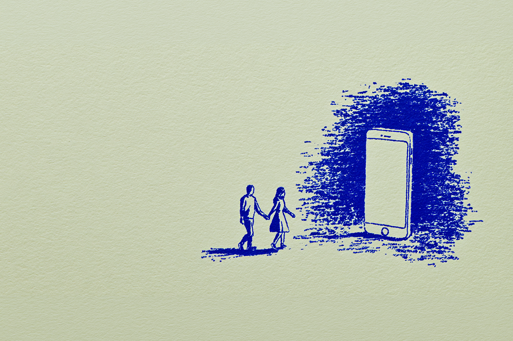
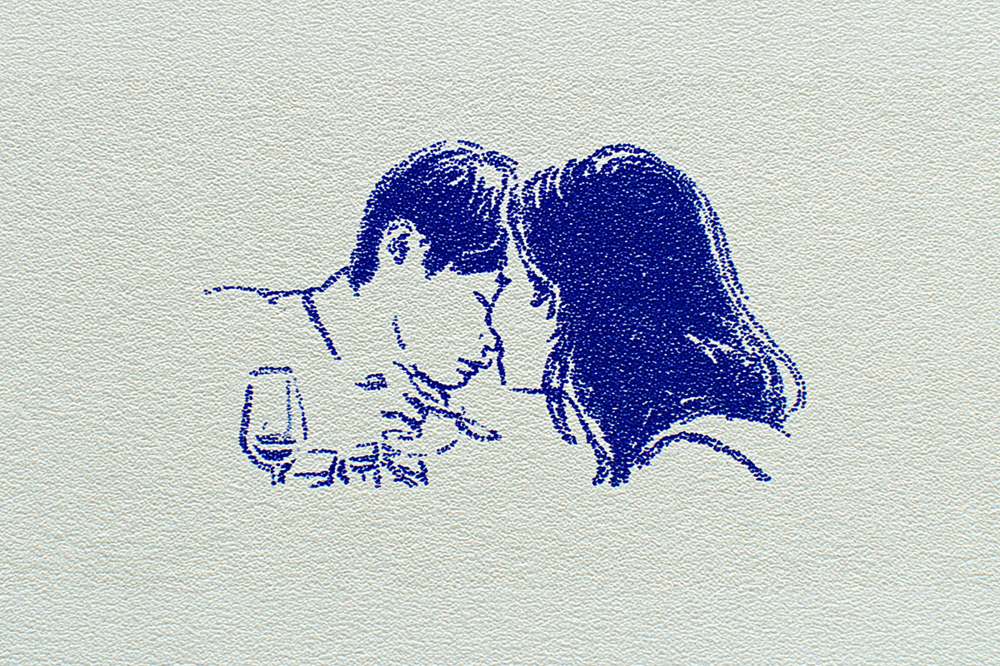
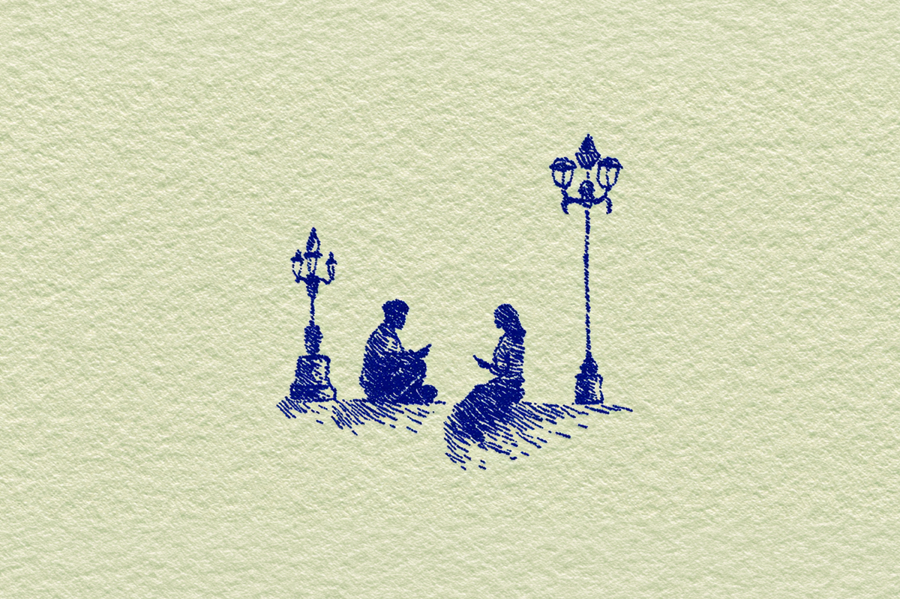

El lenguaje del amor de los Gen Z
La generación que aprendió a no mostrarlo todo.
La generación que aprendió a no mostrarlo todo.

Para los millennials, ver nuevas parejas, compromisos y vacaciones juntos en redes sociales es la norma. Algo te gusta, lo disfrutas y lo compartes en Instagram. Para los de la Generación Z, la cosa no es tan así.
Los psicólogos ya venían observando un fenómeno que viene pasando: los Gen Z ya no quieren compartir sus relaciones en redes sociales. Están optando por relaciones más tranquilas o privadas. De hecho, si buscas en TikTok los términos “quiet relationship” o “private relationship”, hay un mundo de contenido.

Las razones detrás de esto pueden ser muchas. Para los psicólogos especializados en esto, las redes sociales pueden moldear y distorsionar las relaciones románticas. Una pareja que se ve perfecta o que transmite #relationshipgoals (como le dicen en Instagram) puede mostrar solo los buenos momentos, pero guardar las peleas y discusiones.
Y es que mostrar tu relación frecuentemente en redes sociales ha sido relacionado con menores niveles de satisfacción en la relación y un estilo de apego ansioso entre las parejas, según un estudio de 2023. En ese sentido, los Gen Z prefieren rechazar las normas de la perfección, las demostraciones de cariño en línea y volver a la vida presencial.

También hay algo generacional en juego: los Gen Z crecieron viendo cómo otros exponían todo. Relaciones que parecían perfectas en redes y terminaban mal en la vida real. Aprendieron por contraste.
En esa línea, hay algo que seguro has visto: gente que postea en Instagram fotos de unas vacaciones, una comida o una salida con la silueta de otra persona. Se nota que hay alguien ahí, pero no se revela quién es o su cara. Para los Gen Z, esto se llama “soft launch”. Lo quieres mostrar, pero no tanto.
De hecho, Pinterest está lleno de ideas: dos platos en una mesa, siluetas en sombra caminando por la calle, dos pares de zapatos, y así la lista sigue. En el fondo, lo que está cambiando no es solo la forma de mostrar el amor, sino la forma de entenderlo. Para los Gen Z, amar no necesariamente implica compartirlo todo. A veces, al contrario: significa guardarse ciertas cosas.

Pero el “soft launch” no es el único camino. Algunos Gen Z van un paso más allá y simplemente no muestran nada. No hay fotos, no hay pistas, no hay confirmación. La relación existe, pero completamente fuera del espacio digital.
Para generaciones anteriores, eso podría interpretarse como falta de compromiso o incluso como una señal de alerta. Hoy, en cambio, puede ser todo lo contrario: una forma de proteger lo que se tiene.
“Lo que no se expone, no tiene capacidad de ser criticado”, es algo que los Gen Z dicen. Mientras menos comentes tu relación en redes o con amigos, menos críticas o comentarios recibes. En un entorno híper compartido como el nuestro, no compartir tu relación parece ser una forma de resguardar algo que se volvió demasiado fácil de perder.
Porque en un mundo donde todo se comparte, elegir no hacerlo también es una forma de decir algo. Y tal vez ahí está el nuevo lenguaje del amor: uno que no necesita mostrarse para existir.
 Cultura
CulturaSé que suena raro hablar de calor extremo mientras en Chile todos están buscando la parka más gruesa del clóset.
 Cultura
CulturaEl hecho de que estemos entrando al mes de julio no se puede creer. Pero lo que tampoco se puede creer es la cantidad de artistas que han…
 Cultura
CulturaCuando hablamos de trabajos clásicos de la música chilena, siempre se nombran los discos de Violeta Parra, Víctor Jara, Los Jaivas o…